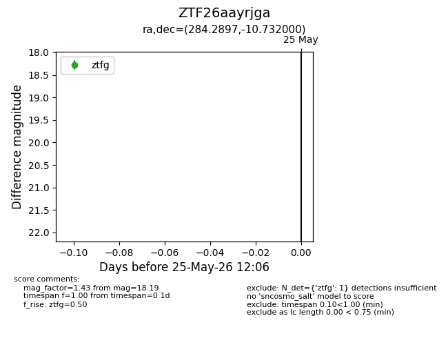
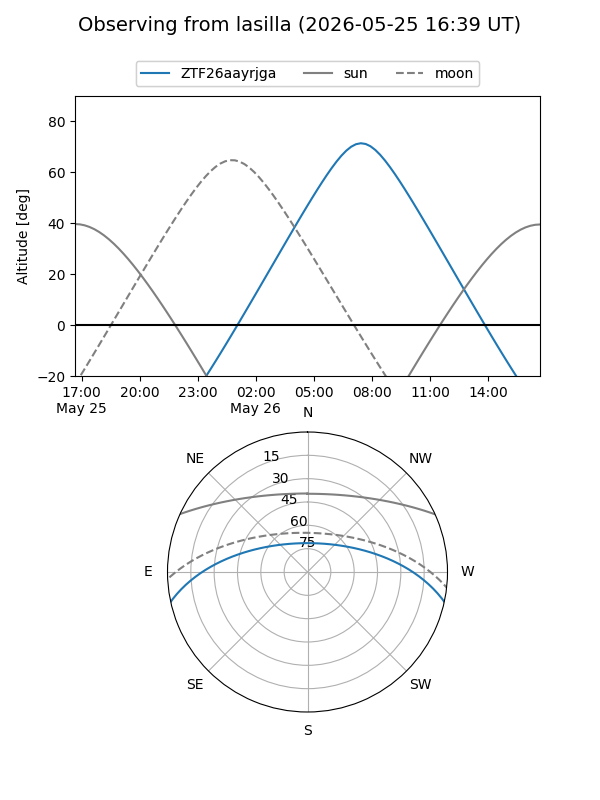
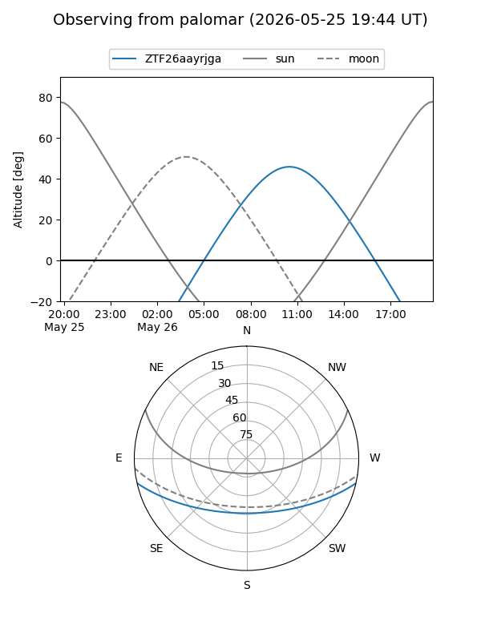

ZTF26aayrjga
Target ZTF26aayrjga at 2026-05-25 12:08
Aliases and brokers:
lsst-FINK: link
lsst-Lasair: link
lsst-ALeRCE: link
ztf-FINK: link
ztf-Lasair: link
ztf-ALeRCE: link
alt names
ZTF26aayrjga (ztf,fink_ztf)
Coordinates:
equatorial (ra, dec) = 284.2897,-10.73200
equatorial (HMS+DMS) = 18:57:09.53,-10:43:55.20
galactic (l, b) = (23.9899,-6.12722)
Flags:
Photometry:
last ztfg=18.19
1 ztfg detections
Lightcurve

Visibility


Additional plots